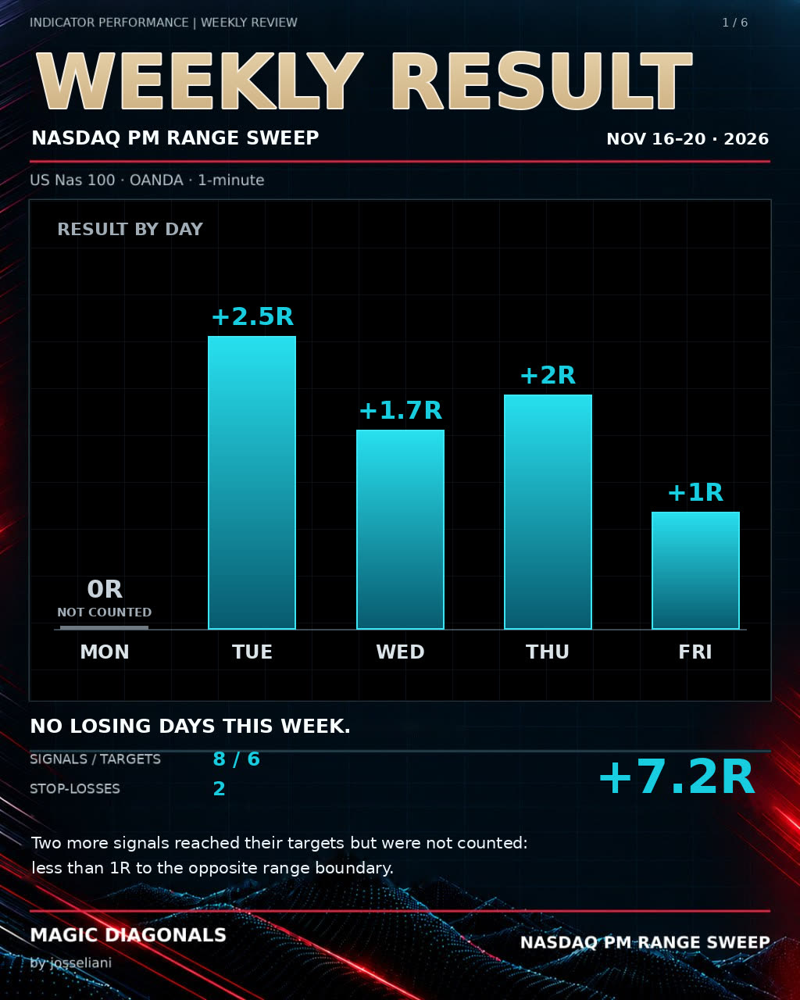
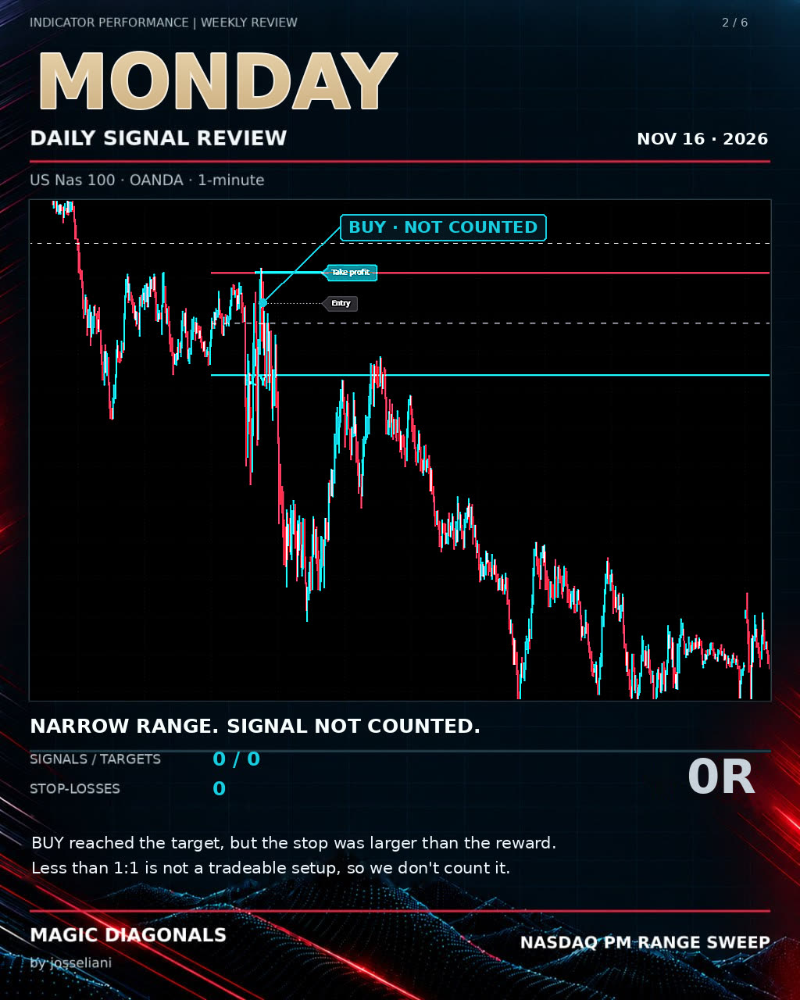
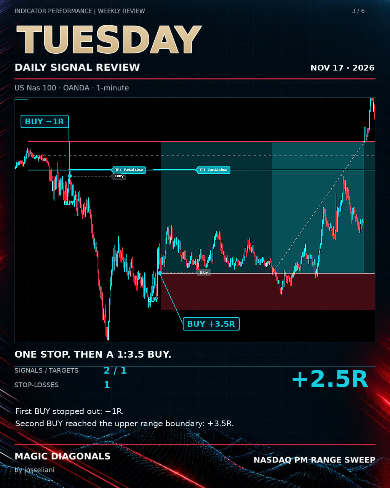
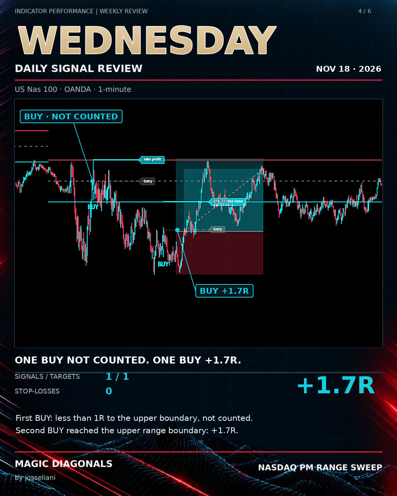
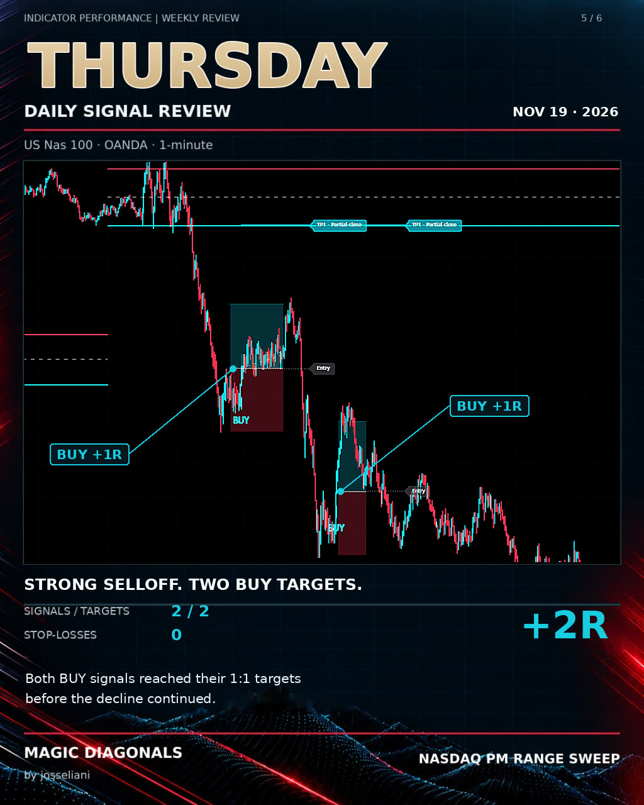
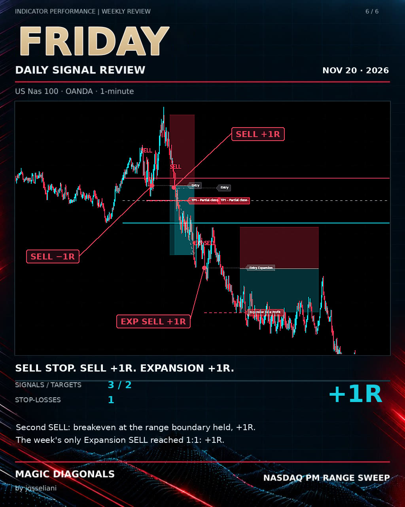

Weekly NASDAQ reviews · Education
NASDAQ Pre-Market Range Sweep — Weekly Review, November 16–20, 2026

This week brought a strong 1:3.5 setup on Tuesday, two clean targets on Thursday, the only Expansion signal of the week on Friday — and two signals that reached their targets but were still not counted.
Why not? Because a signal reaching its target is not the same as a tradeable setup. This week is a good example of how risk-to-reward and trade protection decide what a signal is really worth.
The week in numbers
- 8 counted signals
- 6 targets reached
- 2 stop-losses
- 2 signals not counted (less than 1R to the opposite range boundary)
Weekly result: +7.2R. Monday: no tradeable setup (0R). Tuesday: +2.5R. Wednesday: +1.7R. Thursday: +2R. Friday: +1R.
This educational review evaluates historical indicator signals using their illustrated entries, stop-losses and targets. The R results represent theoretical setup outcomes, not personal trading profits or a record of executed trades.
How we protect a trade
Before going through the days, one rule that explains several decisions this week:
- When price reaches the range boundary, the stop is moved to breakeven.
- When price reaches 1R, part of the position can be closed and the rest moved to breakeven.
If the distance from entry to the opposite range boundary is less than 1R, the trade needs careful protection. In such a setup, you can lose more on the stop than you can earn on the target.
Day by day
Monday, November 16 — BUY signal, not counted
The pre-market range on Monday was very narrow.
Price swept the boundary, returned inside and confirmed a BUY. It even reached the target.
But with a reasonable stop placed beyond the sweep, the distance to the target was smaller than the stop. In real trading, this setup would most likely have ended in a breakeven exit or a stop-loss. So we don't count it as a trading result.
Monday total: 0R


Tuesday, November 17 — one stop-loss, then a 1:3.5 BUY
The first BUY signal didn't work. Price continued lower and hit the stop-loss.
Later, a second BUY appeared after a deeper sweep below the range, around 26,871. The stop for this entry was compact, and the opposite boundary of the range was far away. Price spent several hours consolidating above the entry, then moved up and reached the upper boundary near 27,362.
- First BUY → −1R
- Second BUY → +3.5R
Tuesday total: +2.5R


Wednesday, November 18 — one BUY not counted, one 1:1.7 BUY
The first BUY signal reached the upper boundary of the range. But again, the distance to that boundary was less than 1R compared with the stop. Under our protection rule, this trade would most likely have ended at breakeven or at the stop. We don't count it.
The second BUY appeared lower, around 27,023. It reached the upper range boundary near 27,278 and delivered +1.7R.
- First BUY → not counted
- Second BUY → +1.7R
Wednesday total: +1.7R


Thursday, November 19 — two BUY signals, two targets
Thursday was a strong bearish day, and the indicator still found two BUY opportunities after sweeps below the range.
The first BUY around 27,175 reached its 1:1 target near 27,362. The second BUY around 26,817 reached its 1:1 target near 27,021. After that, the market continued falling. But both setups had already done their job.
- First BUY → +1R
- Second BUY → +1R
Thursday total: +2R


Friday, November 20 — SELL stop, SELL with protection, Expansion SELL
The first SELL signal after the sweep above the range hit its stop-loss. A clear stop, nothing to discuss.
The second SELL is a good illustration of trade protection. The distance from entry to the range boundary was less than 1R. But once price reached the boundary and the stop was moved to breakeven, that breakeven was never touched, and price continued to 1R. So here we count +1R. The difference from Monday and Wednesday is not the entry itself, but what happened after the protection.
Then came the only Expansion signal of the week: Expansion SELL around 25,749. Price reached the 1:1 target near 25,559. With the stop moved to breakeven, the position could have been held until the end of the session and would have delivered considerably more. But according to our rules, we record +1R.
This doesn't work every time. But a few times a week, moving the stop to breakeven and holding part of the position lets you catch a much bigger move.
- First SELL → −1R
- Second SELL → +1R
- Expansion SELL → +1R
Friday total: +1R


What does this week show us?
1. A target reached is not the same as a good trade. On Monday and Wednesday, signals reached their targets, but the distance was less than 1R. We don't count them, even though they would have improved the statistics.
2. Protection decides the outcome of tight setups. Friday's second SELL started with the same problem, but the breakeven held and the trade reached 1R.
3. Signals can work against a strong trend. On Thursday, the market was falling hard, yet both BUY signals reached their targets before the decline continued.
4. Expansion signals don't appear every day. There was only one this week. When it came, it worked cleanly.
Important notes
The weekly +7.2R result includes only counted setups and their outcomes. Historical indicator performance does not guarantee future results. Actual execution, spreads, slippage and position management can produce different outcomes.
Free indicator
NASDAQ Pre-Market Range Sweep
Range → Sweep → Return or Expansion → Structural confirmation → Target. The indicator from this review is free on TradingView.
Looking for more? Our Pro indicators RCC Pro and RSI Retest Pro: see plans.